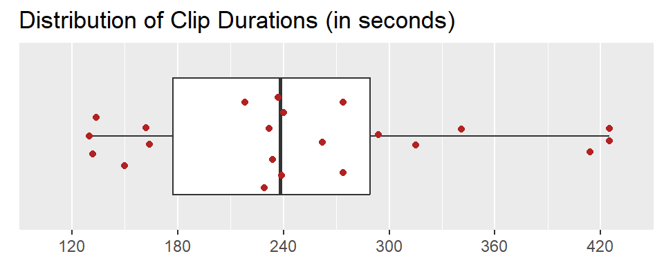
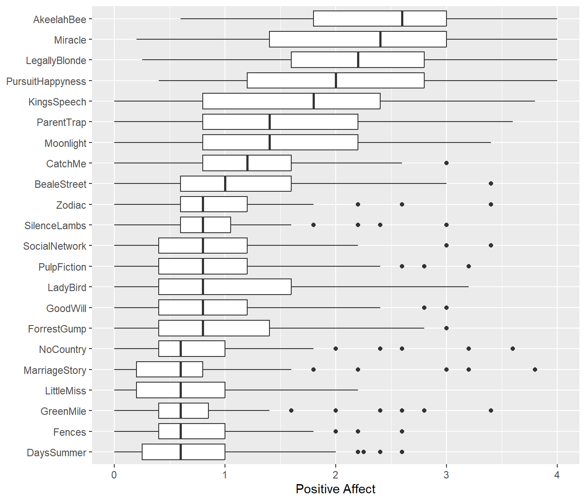
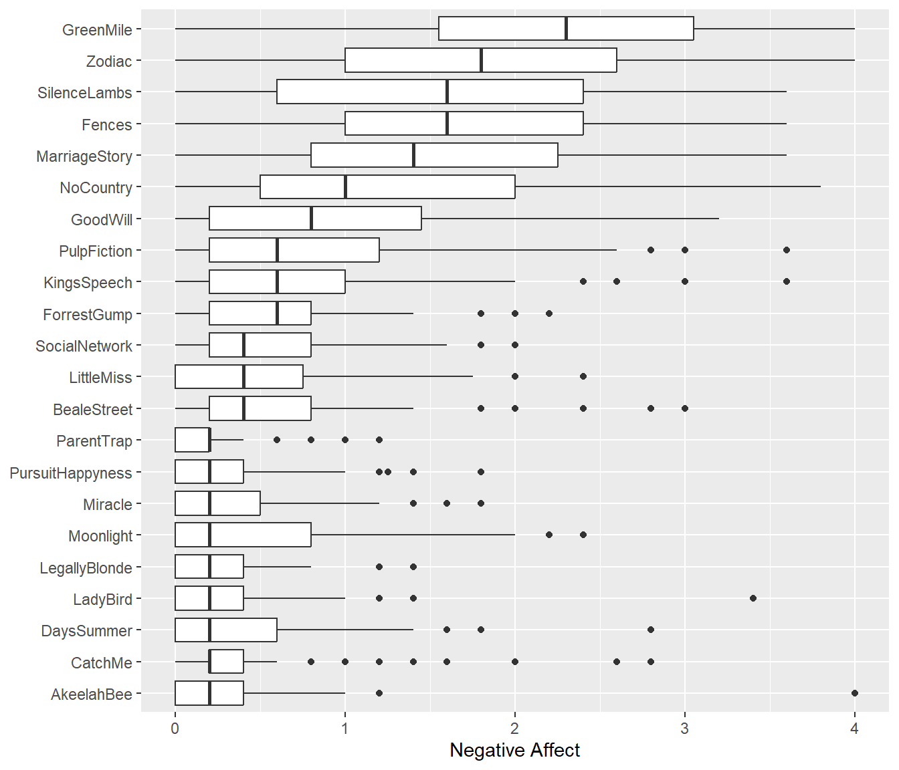
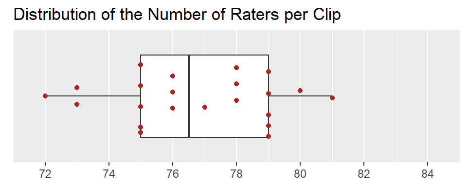
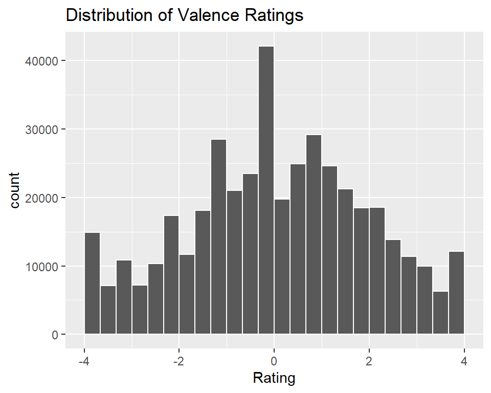
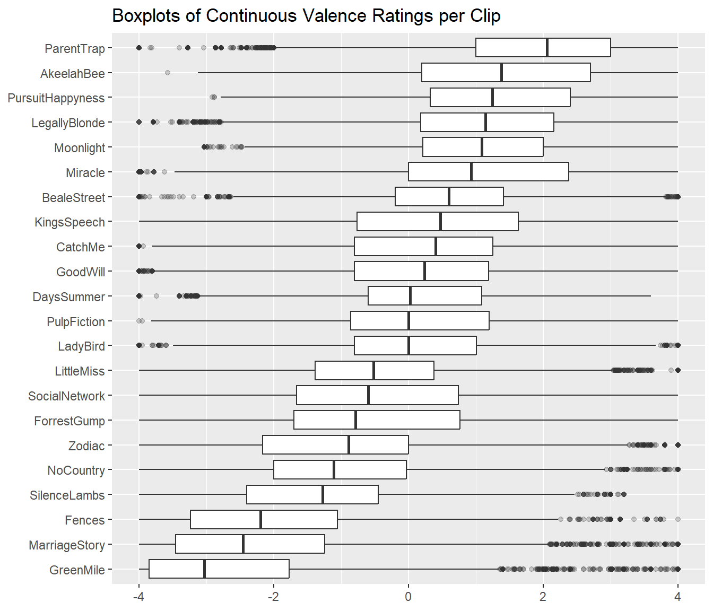

Database Overview
Clip Information
The database currently includes 22 video clips, each drawn from a different English-language film and ranging from 130 to 425 seconds in duration (Mdn=238, MAD=96.4). The figure below shows the distribution of the clips’ durations. The table below presents each clip’s abbreviation, source film title (and release year), as well as starting and stopping timestamp in HH:MM:SS format, and duration in seconds.
| Abbrev | Film | Clip Start | Clip Stop | Duration |
|---|---|---|---|---|
| AkeelahBee | Akeelah and the Bee (2006) | 01:42:23 | 01:45:07 | 164 |
| BealeStreet | If Beale Street Could Talk (2018) | 00:03:05 | 00:05:47 | 162 |
| CatchMe | Catch Me If You Can (2002) | 00:44:32 | 00:49:06 | 274 |
| DaysSummer | 500 Days of Summer (2009) | 01:24:27 | 01:26:39 | 132 |
| Fences | Fences (2016) | 01:21:07 | 01:23:21 | 134 |
| ForrestGump | Forrest Gump (1994) | 02:09:19 | 02:12:57 | 218 |
| GoodWill | Good Will Hunting (1997) | 00:39:23 | 00:41:53 | 150 |
| GreenMile | The Green Mile (1999) | 02:47:41 | 02:51:40 | 239 |
| KingsSpeech | The King's Speech (2010) | 01:40:41 | 01:47:46 | 425 |
| LadyBird | Lady Bird (2017) | 01:24:40 | 01:28:32 | 232 |
| LegallyBlonde | Legally Blonde (2001) | 01:20:27 | 01:27:21 | 414 |
| LittleMiss | Little Miss Sunshine (2006) | 00:13:10 | 00:15:20 | 130 |
| MarriageStory | Marriage Story (2019) | 01:37:24 | 01:41:24 | 240 |
| Miracle | Miracle (2004) | 01:36:20 | 01:42:00 | 341 |
| Moonlight | Moonlight (2016) | 00:17:22 | 00:21:16 | 234 |
| NoCountry | No Country for Old Men (2007) | 00:20:51 | 00:25:13 | 262 |
| ParentTrap | The Parent Trap (1998) | 00:45:10 | 00:52:15 | 425 |
| PulpFiction | Pulp Fiction (1994) | 00:14:26 | 00:18:19 | 229 |
| PursuitHappyness | The Pursuit of Happyness (2006) | 00:24:22 | 00:28:19 | 237 |
| SilenceLambs | The Silence of the Lambs (1991) | 00:14:14 | 00:18:48 | 274 |
| SocialNetwork | The Social Network (2010) | 00:00:27 | 00:05:21 | 294 |
| Zodiac | Zodiac (2007) | 02:16:07 | 02:21:36 | 315 |
Holistic Ratings
After watching each clip, participants provided holistic ratings on how the entire clip made them feel. These holistic ratings were completed using five Positive Affect items (i.e., alert, determined, enthusiastic, excited, inspired) and five Negative Affect items (i.e., afraid, distressed, nervous, scared, upset), each rated on an ordinal scale from 0 to 4. The plot below shows the distributions of the mean scale scores (across all clips and raters).
| Abbrev | Raters | PA Mean | PA SD | NA Mean | NA SD |
|---|---|---|---|---|---|
| AkeelahBee | 81 | 2.49 | 0.81 | 0.35 | 0.52 |
| BealeStreet | 76 | 1.19 | 0.85 | 0.66 | 0.72 |
| CatchMe | 79 | 1.16 | 0.68 | 0.45 | 0.59 |
| DaysSummer | 80 | 0.81 | 0.67 | 0.42 | 0.49 |
| Fences | 79 | 0.78 | 0.53 | 1.79 | 0.98 |
| ForrestGump | 78 | 0.96 | 0.71 | 0.59 | 0.52 |
| GreenMile | 76 | 0.73 | 0.63 | 2.24 | 1.01 |
| GoodWill | 76 | 0.92 | 0.67 | 0.93 | 0.80 |
| KingsSpeech | 77 | 1.69 | 1.01 | 0.80 | 0.79 |
| LadyBird | 78 | 0.99 | 0.81 | 0.36 | 0.49 |
| LegallyBlonde | 75 | 2.20 | 0.84 | 0.24 | 0.32 |
| LittleMiss | 78 | 0.70 | 0.54 | 0.46 | 0.50 |
| Moonlight | 75 | 1.59 | 0.92 | 0.47 | 0.61 |
| Miracle | 79 | 2.19 | 0.96 | 0.31 | 0.40 |
| MarriageStory | 76 | 0.73 | 0.74 | 1.49 | 0.90 |
| NoCountry | 73 | 0.83 | 0.69 | 1.23 | 0.94 |
| PulpFiction | 79 | 0.95 | 0.72 | 0.81 | 0.81 |
| PursuitHappyness | 79 | 2.04 | 0.93 | 0.33 | 0.39 |
| ParentTrap | 79 | 1.49 | 0.86 | 0.19 | 0.26 |
| SocialNetwork | 73 | 0.91 | 0.72 | 0.54 | 0.54 |
| SilenceLambs | 80 | 0.86 | 0.51 | 1.57 | 0.96 |
| Zodiac | 76 | 0.97 | 0.58 | 1.85 | 0.98 |


The table below shows the estimated inter-rater reliability (i.e., unbalanced average-measures consistency intraclass correlation) for the holistic ratings of each clip (first item-level and then scale-level). These were derived from Bayesian generalizability studies using the varde package. The lower and upper columns represent the boundaries of the 95% equal-tail credible interval.
| Score | Term | Estimate | Lower | Upper | Raters | Error |
|---|---|---|---|---|---|---|
| Afraid | ICC(Q,khat) | 0.984 | 0.970 | 0.992 | 76.965 | Relative |
| Alert | ICC(Q,khat) | 0.967 | 0.939 | 0.983 | 76.828 | Relative |
| Determined | ICC(Q,khat) | 0.982 | 0.966 | 0.991 | 77.253 | Relative |
| Distressed | ICC(Q,khat) | 0.985 | 0.972 | 0.992 | 76.488 | Relative |
| Enthusiastic | ICC(Q,khat) | 0.986 | 0.973 | 0.992 | 76.191 | Relative |
| Excited | ICC(Q,khat) | 0.982 | 0.966 | 0.990 | 77.166 | Relative |
| Inspired | ICC(Q,khat) | 0.991 | 0.982 | 0.995 | 77.162 | Relative |
| Nervous | ICC(Q,khat) | 0.980 | 0.963 | 0.990 | 76.986 | Relative |
| Scared | ICC(Q,khat) | 0.984 | 0.972 | 0.992 | 77.033 | Relative |
| Upset | ICC(Q,khat) | 0.990 | 0.981 | 0.994 | 77.213 | Relative |
| Score | Term | Estimate | Lower | Upper | Raters | Error |
|---|---|---|---|---|---|---|
| NegativeAffect | ICC(Q,khat) | 0.990 | 0.981 | 0.995 | 77.302 | Relative |
| PositiveAffect | ICC(Q,khat) | 0.987 | 0.974 | 0.993 | 77.302 | Relative |
Dynamic Ratings
A total of 83 participants watched this film clip and used the CARMA software to provide continuous (i.e., second-by-second) ratings of how it made them feel. These continuous ratings were made on a single emotional valence scale ranging from -4 (very negative) to 4 (very positive).
Each clip was watched by participants who used the CARMA software to provide continuous (i.e., second-by-second) ratings of how it made them feel. These continuous ratings were made on a single emotional valence scale ranging from -4 (very negative) to 4 (very positive). The number of participants rating each clip ranged from 72 to 81 (Mdn=76.5, MAD=2.2). The table below provides the number of raters and duration per clip as well as a summary of the valence ratings distribution across raters (i.e., mean, standard deviation, and quartiles).


| Abbrev | Raters | Mean | SD | p0 | p25 | p50 | p75 | p100 |
|---|---|---|---|---|---|---|---|---|
| AkeelahBee | 81 | 1.51 | 1.51 | -3.58 | 0.20 | 1.37 | 2.70 | 4.00 |
| BealeStreet | 76 | 0.57 | 1.33 | -4.00 | -0.20 | 0.60 | 1.41 | 4.00 |
| CatchMe | 79 | 0.30 | 1.47 | -4.00 | -0.80 | 0.40 | 1.25 | 4.00 |
| DaysSummer | 80 | 0.21 | 1.29 | -4.00 | -0.60 | 0.02 | 1.08 | 3.60 |
| Fences | 79 | -2.06 | 1.48 | -4.00 | -3.24 | -2.20 | -1.05 | 4.00 |
| ForrestGump | 78 | -0.49 | 1.69 | -4.00 | -1.70 | -0.79 | 0.76 | 4.00 |
| GoodWill | 76 | 0.16 | 1.59 | -4.00 | -0.80 | 0.24 | 1.19 | 4.00 |
| GreenMile | 75 | -2.57 | 1.51 | -4.00 | -3.85 | -3.03 | -1.77 | 4.00 |
| KingsSpeech | 77 | 0.45 | 1.63 | -4.00 | -0.76 | 0.47 | 1.63 | 4.00 |
| LadyBird | 73 | 0.18 | 1.33 | -4.00 | -0.80 | 0.00 | 1.01 | 4.00 |
| LegallyBlonde | 75 | 1.15 | 1.47 | -4.00 | 0.18 | 1.14 | 2.15 | 4.00 |
| LittleMiss | 75 | -0.45 | 1.44 | -4.00 | -1.38 | -0.52 | 0.38 | 4.00 |
| MarriageStory | 76 | -2.18 | 1.59 | -4.00 | -3.46 | -2.46 | -1.24 | 4.00 |
| Miracle | 78 | 1.10 | 1.55 | -4.00 | 0.00 | 0.92 | 2.37 | 4.00 |
| Moonlight | 75 | 1.19 | 1.21 | -3.03 | 0.21 | 1.09 | 2.00 | 4.00 |
| NoCountry | 72 | -0.99 | 1.34 | -4.00 | -2.00 | -1.11 | -0.03 | 4.00 |
| ParentTrap | 78 | 1.90 | 1.37 | -4.00 | 1.00 | 2.05 | 3.00 | 4.00 |
| PulpFiction | 79 | 0.21 | 1.44 | -4.00 | -0.85 | 0.00 | 1.20 | 4.00 |
| PursuitHappyness | 79 | 1.35 | 1.42 | -2.91 | 0.32 | 1.24 | 2.40 | 4.00 |
| SilenceLambs | 79 | -1.37 | 1.40 | -4.00 | -2.40 | -1.28 | -0.45 | 3.20 |
| SocialNetwork | 73 | -0.50 | 1.70 | -4.00 | -1.66 | -0.60 | 0.74 | 4.00 |
| Zodiac | 75 | -0.99 | 1.56 | -4.00 | -2.17 | -0.89 | 0.00 | 4.00 |

The table below shows the estimated inter-rater reliability (i.e., balanced average-measures consistency intraclass correlation) for the continuous valence ratings of each clip. These were derived from a Bayesian generalizability study using the varde package. The lower and upper columns in the table below represent the boundaries of the 95% equal-tail credible interval.
| Abbrev | Term | Estimate | Lower | Upper | Raters | Error |
|---|---|---|---|---|---|---|
| AkeelahBee | ICC(C,k) | 0.995 | 0.993 | 0.996 | 81 | Relative |
| BealeStreet | ICC(C,k) | 0.950 | 0.936 | 0.959 | 76 | Relative |
| CatchMe | ICC(C,k) | 0.982 | 0.979 | 0.985 | 79 | Relative |
| DaysSummer | ICC(C,k) | 0.947 | 0.932 | 0.959 | 80 | Relative |
| Fences | ICC(C,k) | 0.963 | 0.952 | 0.971 | 79 | Relative |
| ForrestGump | ICC(C,k) | 0.932 | 0.916 | 0.943 | 78 | Relative |
| GoodWill | ICC(C,k) | 0.981 | 0.976 | 0.985 | 76 | Relative |
| GreenMile | ICC(C,k) | 0.951 | 0.942 | 0.960 | 75 | Relative |
| KingsSpeech | ICC(C,k) | 0.946 | 0.939 | 0.953 | 77 | Relative |
| LadyBird | ICC(C,k) | 0.974 | 0.969 | 0.979 | 73 | Relative |
| LegallyBlonde | ICC(C,k) | 0.973 | 0.968 | 0.976 | 75 | Relative |
| LittleMiss | ICC(C,k) | 0.910 | 0.881 | 0.929 | 75 | Relative |
| MarriageStory | ICC(C,k) | 0.965 | 0.958 | 0.971 | 76 | Relative |
| Miracle | ICC(C,k) | 0.994 | 0.993 | 0.995 | 78 | Relative |
| Moonlight | ICC(C,k) | 0.969 | 0.962 | 0.974 | 75 | Relative |
| NoCountry | ICC(C,k) | 0.954 | 0.946 | 0.962 | 72 | Relative |
| ParentTrap | ICC(C,k) | 0.968 | 0.963 | 0.972 | 78 | Relative |
| PulpFiction | ICC(C,k) | 0.943 | 0.931 | 0.953 | 79 | Relative |
| PursuitHappyness | ICC(C,k) | 0.987 | 0.985 | 0.990 | 79 | Relative |
| SilenceLambs | ICC(C,k) | 0.967 | 0.961 | 0.972 | 79 | Relative |
| SocialNetwork | ICC(C,k) | 0.923 | 0.910 | 0.935 | 73 | Relative |
| Zodiac | ICC(C,k) | 0.992 | 0.991 | 0.993 | 75 | Relative |